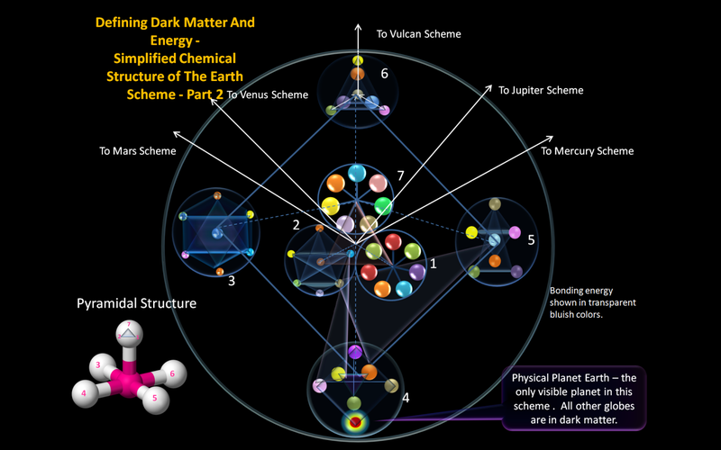
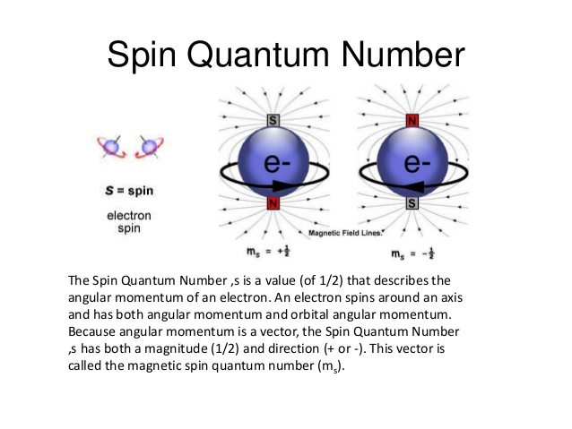

New state of matter

A bizarre new state of matter has been discovered - one in which electrons that usually are indivisible seem to break apart.
The new state of matter, which had been predicted but never spotted in real life before, forms when the electrons in an exotic material enter into a type of "quantum dance," in which the spins of the electrons interact in a particular way, said Arnab Banerjee, a physicist at Oak Ridge National Laboratory in Tennessee.
The findings could pave the way for better quantum computers, Banerjee said.
The dance of spins While most people encounter only the three ordinary states of matter in daily life — solid, liquid and gas — under special conditions, more exotic states of matter can emerge. For instance, about 40 years ago, physicists proposed the existence of a matter state called a quantum spin liquid, in which electrons interact to create bizarre effects. Electrons have an intrinsic property called spin, meaning they act like tiny bar magnets that orient in one direction or another. If all of these tiny magnets align in one direction, a material is referred to as ferromagnetic. A material with alternating spins is anti-ferromagnetic, and a material with disordered spins that do not interact are paramagnetic. As most materials cool down, these teensy bar magnets tend to align. But in a quantum spin liquid, the tiny bar magnets "talk" to each other, so they influence which way the others are spinning but still remain in disarray no matter how cold the material gets, Banerjee said. A quantum spin liquid could seem like a solid, meaning it could be a literal hunk of matter that could be held in the hand. However, if you were to zoom in and look just at the material's electrons in the outer rings of the atoms, the electrons in the material would have the disorderly interactions characteristic of a liquid, Banerjee said. "They still interact with one another; they form waves and form ripples. But they are not held together," Banerjee told Live Science. For instance, about a decade ago, physicist Alexei Kitaev predicted that a special form of quantum spin liquid could make it seem as though the electrons were breaking up into Majorana fermions, long-predicted particles that can act as their own antiparticle. If this new matter state existed, it would have some truly bizarre effects, because whereas protons and neutrons are made up of smaller particles called quarks, electrons are thought to be fundamental particles, with spin and charge that are indivisible. Though the electrons in this case would not actually break into tiny parts, their spin interactions would make it look as if they had fragmented, which is why the Majorana fermions in this state of matter are called "quasiparticles," Banerjee said.
Special material Banerjee and his colleagues set out to prove that Kitaev's predictions occurred in the real world. So they looked at a powder made of a flaky material called alpha ruthenium chloride. The atoms of alpha ruthenium chloride are aligned in two-dimensional sheets in a honeycomb pattern. The team used ruthenium because the element has just one electron in its outer shell, meaning the material is more prone to the type of quantum fluctuation that produces the necessary interactions between electrons, Banerjee said. Then, the team bombarded the material with neutrons, which excited the spins of its electrons, creating a kind of "splash" on the quantum level. Next, they observed the pattern of the neutrons bouncing off the material. Based on the pattern of scattered neutrons, the team deduced that the material had indeed caused the electrons to form pairs of Majorana fermions. In the material, "a group of electrons go into a dance," Banerjee said. "It's this team of electrons that gives this perception that, 'Ah! Now, you have a separation of the electron into smaller particles.'" These bizarre ripples look very different from what would be expected in an ordinary quantum spin liquid. What's more, the ripples had the characteristic signature of Majorana fermion formation, and exist even when exposed to small temperature changes. "To see them really in a material, in a hunk of material you can hold in [your] hand, is very special," Banerjee said.
Quantum computing material The new material, which the scientists dubbed a Kitaev quantum spin liquid, could eventually pave the way for more robust quantum computing, Banerjee said. In quantum computing, instead of encoding information in the classical bits of "0" and "1," atoms or particles of a material exist in a superposition of all possible states between 0 and 1, meaning each quantum bit, or qubit, can process many bits simultaneously, and the quantum entanglement of the information allows calculations to be performed instantaneously, Banerjee said. But the materials traditionally used to produce qubits are finicky and pricey, requiring laborious "babysitting" to make sure there is absolutely no motion or thermal fluctuation, and no imperfections in the materials, Banerjee said.
The dance of spins While most people encounter only the three ordinary states of matter in daily life — solid, liquid and gas — under special conditions, more exotic states of matter can emerge. For instance, about 40 years ago, physicists proposed the existence of a matter state called a quantum spin liquid, in which electrons interact to create bizarre effects. Electrons have an intrinsic property called spin, meaning they act like tiny bar magnets that orient in one direction or another. If all of these tiny magnets align in one direction, a material is referred to as ferromagnetic. A material with alternating spins is anti-ferromagnetic, and a material with disordered spins that do not interact are paramagnetic. As most materials cool down, these teensy bar magnets tend to align. But in a quantum spin liquid, the tiny bar magnets "talk" to each other, so they influence which way the others are spinning but still remain in disarray no matter how cold the material gets, Banerjee said. A quantum spin liquid could seem like a solid, meaning it could be a literal hunk of matter that could be held in the hand. However, if you were to zoom in and look just at the material's electrons in the outer rings of the atoms, the electrons in the material would have the disorderly interactions characteristic of a liquid, Banerjee said. "They still interact with one another; they form waves and form ripples. But they are not held together," Banerjee told Live Science. For instance, about a decade ago, physicist Alexei Kitaev predicted that a special form of quantum spin liquid could make it seem as though the electrons were breaking up into Majorana fermions, long-predicted particles that can act as their own antiparticle. If this new matter state existed, it would have some truly bizarre effects, because whereas protons and neutrons are made up of smaller particles called quarks, electrons are thought to be fundamental particles, with spin and charge that are indivisible. Though the electrons in this case would not actually break into tiny parts, their spin interactions would make it look as if they had fragmented, which is why the Majorana fermions in this state of matter are called "quasiparticles," Banerjee said.
Special material Banerjee and his colleagues set out to prove that Kitaev's predictions occurred in the real world. So they looked at a powder made of a flaky material called alpha ruthenium chloride. The atoms of alpha ruthenium chloride are aligned in two-dimensional sheets in a honeycomb pattern. The team used ruthenium because the element has just one electron in its outer shell, meaning the material is more prone to the type of quantum fluctuation that produces the necessary interactions between electrons, Banerjee said. Then, the team bombarded the material with neutrons, which excited the spins of its electrons, creating a kind of "splash" on the quantum level. Next, they observed the pattern of the neutrons bouncing off the material. Based on the pattern of scattered neutrons, the team deduced that the material had indeed caused the electrons to form pairs of Majorana fermions. In the material, "a group of electrons go into a dance," Banerjee said. "It's this team of electrons that gives this perception that, 'Ah! Now, you have a separation of the electron into smaller particles.'" These bizarre ripples look very different from what would be expected in an ordinary quantum spin liquid. What's more, the ripples had the characteristic signature of Majorana fermion formation, and exist even when exposed to small temperature changes. "To see them really in a material, in a hunk of material you can hold in [your] hand, is very special," Banerjee said.
Quantum computing material The new material, which the scientists dubbed a Kitaev quantum spin liquid, could eventually pave the way for more robust quantum computing, Banerjee said. In quantum computing, instead of encoding information in the classical bits of "0" and "1," atoms or particles of a material exist in a superposition of all possible states between 0 and 1, meaning each quantum bit, or qubit, can process many bits simultaneously, and the quantum entanglement of the information allows calculations to be performed instantaneously, Banerjee said. But the materials traditionally used to produce qubits are finicky and pricey, requiring laborious "babysitting" to make sure there is absolutely no motion or thermal fluctuation, and no imperfections in the materials, Banerjee said.

By contrast, if researchers could create qubits made from a Kitaev spin liquid, these qubits would be robust at higher temperatures and would occur independent of imperfections in the material properties, he said.
The findings were published April 4 in the journal Nature Materials.
Media contacts: Gunnar Ahlbom
NASA Research Center, Moffett Field, Calif.
650-604-6982
Gahlbom@gmail.com
Media contacts: Gunnar Ahlbom
NASA Research Center, Moffett Field, Calif.
650-604-6982
Gahlbom@gmail.com